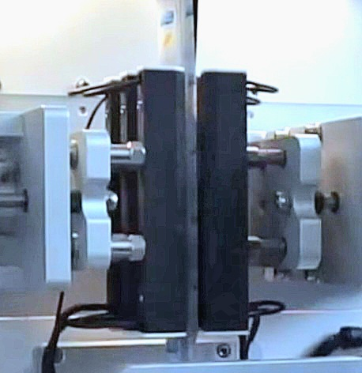

بسم الله الرحمن الرحيم
دراسة جدوى أولية
مشروع آلة التعبئة والتغليف متعددة المسارات
مشروع تخرج لطلاب قسم الميكاترونكس
جامعة ذمار
VFFS MULTI-LANE MACHINE
فهرس المحتويات
1. مقدمة المشروع
مع التوسع الكبير في الصناعات والآلات والزيادة في الطلب على حلول التعبئة السريعة والدقيقة، أصبحت تقنيات التعبئة عاملاً أساسياً في تحسين جودة المنتج، وتقليل الهدر، وزيادة كفاءة الإنتاج. واحدة من أبرز طرق التعبئة هي تعبئة العصا (Stick Pack) المستخدمة لتعبئة كميات صغيرة من السوائل أو المسحوق بطريقة عملية وموفرة. على الرغم من توفر هذه التقنية في السوق، تعتمد معظم خطوط التعبئة الآلية على آلات مستوردة مكلفة أو تعبئة يدوية، مما يؤدي إلى محدودية في الكفاءة والإنتاجية في الآلات أحادية المسار التقليدية، مع ندرة الآلات متعددة المسارات المصنعة محليًا.
ملاحظة للمستثمرين وجهات التمويل:
هذه الوثيقة هي دراسة جدوى أولية أعدت لتقييم الجدوى الفنية والسوقية. عند وجود اهتمام إيجابي أو موافقة مؤسسية، سنجري دراسة جدوى مفصلة كاملة: زيارات ميدانية، استبيانات ميدانية، تقديرات تكلفة دقيقة، عروض أسعار من الموردين، واختبار النموذج الأولي وسيتم إرفاقها بالدراسة الكاملة.
ملاحظات حول سلسلة قيمة الطماطم وفاتورة الاستيراد السنوية:
تشير المناقشات الأخيرة في القطاع إلى حدوث فائض موسمي من الطماطم مع وجود نقص في قدرات المعالجة والتعبئة اللاحقة. على سبيل المثال، تشير التقارير إلى وجود نحو 160–170 طن من مخزون الطماطم المعالجة مخزّنًا في مجمع معالجة (باجل) ولم يتم صرفه بالكامل. بالإضافة إلى ذلك، تكلف اليمن أكثر من 40 مليون دولار سنويًا لاستيراد معجون الطماطم والكاتشب من الخارج، رغم أن بلادنا تمتلك المتطلبات الأساسية التي قد تعفيها من فاتورة الاستيراد هذه. يبرز هذا الفجوات في الخدمات اللوجستية بعد الحصاد، والتعبئة، وروابط السوق التي يمكن لحلول التعبئة المحلية—مثل آلة VFFS متعددة المسارات المقترحة—المساعدة في معالجتها.
1.1 فكرة المشروع
يهدف المشروع إلى تصميم وتصنيع نموذج أولي لآلة تعبئة أوتوماتيكية متعددة المسارات لتعبئة المنتجات (سوائل أو مساحيق) وتغليفها في عبوات صغيرة (Stick Packs). تعتمد الآلة على أنظمة ميكانيكية وهوائية للتحكم في حركة الفيلم، والختم، والملء، بالإضافة إلى نظام تحكم آلي باستخدام وحدة تحكم منطقية قابلة للبرمجة، وشاشة تفاعلية للعميل، ونظام إنترنت الأشياء لسهولة التحكم والمراقبة من أي مكان في العالم. لحل مشكلة التعبئة اليدوية أو التعبئة الآلية البطيئة وغير الفعالة، من خلال إنشاء آلة ذات سعة إنتاجية عالية تعمل على مسارات متزامنة متعددة، مضاعفة كمية الإنتاج وتوفير الوقت، مع ضمان دقة التعبئة وجودة الختم.
1.2 المشكلة التي يعالجها المشروع
المصانع المحلية، وخاصة الصغيرة والمتوسطة، تواجه عدة تحديات في عمليات التعبئة:
- انخفاض الإنتاجية بسبب الاعتماد على آلات أحادية المسار أو التعبئة اليدوية
- ارتفاع تكاليف التشغيل بسبب استغراق الوقت واستهلاك المواد الخام
- عدم القدرة على المنافسة مع المنتجات المستوردة بسبب ارتفاع التكلفة
- تقليل الاعتماد على الاستيراد وتشجيع التصنيع المحلي
1.3 أهداف المشروع
الأهداف الفنية
- تصميم آلة بثلاثة مسارات متوازية لزيادة الإنتاجية
- تحقيق دقة تعبئة بنسبة خطأ ±1%
- نظام تحكم آلي (وحدة تحكم منطقية قابلة للبرمجة + واجهة تشغيل)
- التصميم وفق معايير الصناعة باستخدام مواد من الفولاذ المقاوم للصدأ
أهداف الإنتاج
- تنويع المنتجات (سوائل ومساحيق)
- سرعة إنتاج 90-200 عبوة/دقيقة مقارنة بـ 30-40 في الآلات أحادية المسار
- توفير 30-60% من وقت التعبئة مقارنة بالطرق التقليدية
- تقليل هدر المواد الخام بفضل دقة التعبئة العالية
الأهداف التسويقية
- توفير آلة بتكلفة أقل بنسبة 40-50% من الآلات المستوردة
- تصنيع محلي يوفر آلة عالية الكفاءة تنافس المستورد بسعر أقل
- تقليل الاعتماد على الاستيراد وتشجيع التصنيع المحلي
- تمكين المصانع الصغيرة من المنافسة بمنتجات عالية الجودة
الأهداف التعليمية
- تطبيق المعرفة في ميكانيكا الحركة، والهندسة الميكاترونية، والتحكم الآلي
- التمكن من نمذجة وتصميم ثلاثي الأبعاد
- تطوير نظام تحكم منطقي قابل للبرمجة
- اختيار ودمج المستشعرات والمحركات
- إعداد دراسات فنية وتسويقية ومالية وتشغيلية
- إدارة المشروع والتوثيق الاحترافي
- تحليل المخاطر وضمان الجودة
1.4 أهمية المشروع
الأهمية الاقتصادية
- الاستغلال الأمثل لمواردنا الطبيعية من خلال تفعيل الصناعة التحويلية
- توفير بديل محلي منخفض التكلفة للآلات المستوردة
- زيادة الإنتاجية عبر التعبئة متعددة المسارات (3-6 مسارات تعمل بالتوازي)
- تقليل الاعتماد على العمل اليدوي المكلف وغير الدقيق
- تمكين المصانع الصغيرة من المنافسة بمنتجات عالية الجودة
- تشجيع المستثمرين على الدخول في مجال تصنيع آلات التعبئة
الأهمية الصناعية والبيئية
- تلبية احتياجات المصانع التي تعتمد على تعبئة Stick Pack
- ضمان جودة التعبئة، والختم المحكم، والتوزيع الدقيق للمنتج
- توفير قطع غيار محليًا، مما يسهل الصيانة ويقلل التكاليف
- تحسين كفاءة المصانع المحلية
- تقليل الهدر الناتج عن التعبئة اليدوية غير الدقيقة
- إمكانية استخدام مواد تغليف صديقة للبيئة
- تقليل كمية البلاستيك المستخدمة
الأهمية الاجتماعية
- تلبية حاجة المجتمع لعبوات صغيرة مناسبة للاستهلاك الفردي اليومي
- توفير خيارات تعبئة متنوعة تلبي احتياجات الأسر ذات الدخل المنخفض
- توفير منتجات سهلة الفتح والاستخدام للأطفال وكبار السن
- تقليل فاتورة الاستيراد الوطنية
- تعزيز ثقافة الاستهلاك الذكي عن طريق تقليل هدر الطعام
- خلق فرص عمل من خلال توفير وظائف فنية في التصنيع والتشغيل وصيانة الآلات
2. الوصف الفني للمشروع
مكونات آلة التعبئة
تتكون الآلة من نظام تعبئة ونظام تغليف، بالإضافة إلى نظام تحكم ومراقبة، يحتوي كل منهما على عدة مكونات أساسية تعمل معًا لإكمال عملية التعبئة والتغليف.
2.1 مكونات نظام التعبئة
2.1.1 وحدة فك بكرة الفيلم

عمود يحمل بكرة الفيلم مع نظام فرامل للتحكم في الشد ومستشعر نهاية اللفة
مبدأ العمل الفردي:
يوفر الفيلم الخام بشكل مستمر مع شد مناسب، مع إنذار مبكر عند نفاد المادة
مبدأ العمل في الآلة:
يوفر شريط الفيلم مع شد مثالي للمراحل التالية، مما يضمن عملية تعبئة وتغليف سلسة
2.1.2 وحدة بكرة التعويض (Dancer Roller)

ذراع متحرك يمتص التغيرات المفاجئة في شد الفيلم
مبدأ العمل الفردي:
تعمل كعازل للفيلم لامتصاص الصدمات الناتجة عن تغيرات سرعة سحب الفيلم
مبدأ العمل في الآلة:
يضمن وصول الفيلم إلى مراحل التعبئة والختم بشد مثالي يؤثر مباشرة على دقة حجم العبوة وجودة الختم
2.1.3 وحدة التسجيل والتوجيه

بكرات توجيه مع محرك سيرفو ومستشعر بصري لقراءة علامة التسجيل
مبدأ العمل الفردي:
- • يكتشف المستشعر علامة التسجيل على الفيلم
- • ينشط المحرك لسحب الفيلم بعيدًا عن علامة التسجيل
- • يعيد الحمل إلى وضع الاستعداد
مبدأ العمل في الآلة:
يضمن تقدم الفيلم بدقة وفقًا للمسافات المطلوبة لكل عملية طباعة أو قطع أو طي
2.1.4 وحدة التقطيع الطولي (Slitting)

عجلة قطع لقطع الفيلم طولياً إلى شريطين متساويين
مبدأ العمل الفردي:
قطع الفيلم طولياً دون تمزق
مبدأ العمل في الآلة:
يضمن تحضير شريطين من الفيلم لمرحلة الطي وإدخال أنابيب التعبئة
2.1.5 وحدة الطي

مجموعة بكرات تشكل مسارًا يشبه الحرف "V" لطَي الفيلم
مبدأ العمل الفردي:
- • تقسيم الفيلم إلى طبقتين متطابقتين خاليتين من التجاعيد
- • الحفاظ على توازنهما ومحاذاتهما
مبدأ العمل في الآلة:
يضمن وصول الطبقتين أمام رؤوس التعبئة في نفس الوقت وبالدقة المطلوبة
2.1.6 وحدة الطباعة والتسجيل

نظام طباعة ذكي يطبع بيانات المنتج في الزمن الحقيقي
مبدأ العمل الفردي:
- • يكتشف المستشعر علامة التسجيل ويرسل إشارة إلى PLC
- • ينشط الطابعة لطباعة البيانات في اللحظة المناسبة متزامنة مع إشارة المستشعر
مبدأ العمل في الآلة:
يضمن الطباعة المتزامنة في الموقع المحدد قبل مرحلة التعبئة والختم
2.1.7 وحدة الختم الطولي
3 أزواج من الصفائح المسخنة لخلق ختم طولي محكم
مبدأ العمل الفردي:
تطبيق الحرارة والضغط لخلق ختم طولي محكم على طول الفيلم المشكل
مبدأ العمل في الآلة:
بعد قطع الفيلم ووضعه فوق بعضه، تقوم هذه الوحدة بختم الحواف الطولية للفيلم مشكلة أنبوبًا مغلقًا من الجوانب جاهزًا للتعبئة
2.1.8 وحدة السحب

زوج من البكرات المطاطية لسحب الفيلم عمودياً للأسفل
مبدأ العمل الفردي:
يسحب الفيلم للأسفل بدقة لضمان طول العبوة المطلوب
مبدأ العمل في الآلة:
تضمن هذه البكرات تقدم الفيلم بسلاسة وثبات عبر مراحل التعبئة والختم، مما يؤثر مباشرة على دقة حجم العبوة وجودة الختم
2.1.9 وحدة الختم العرضي

زوج من الصفائح المسخنة المتحركة لخلق ختم عرضي
مبدأ العمل الفردي:
يخلق رابطًا عرضيًا محكمًا يعزل العبوات عن بعضها
مبدأ العمل في الآلة:
يتم إغلاق العبوات من الأعلى بعد التعبئة، وتجهيز العبوات التالية للإغلاق من الأسفل، معزولة عن العبوات المملوءة
2.1.10 وحدة القطع
سكين حاد يفصل العبوات المعبأة عن بكرة الفيلم المستمرة
مبدأ العمل الفردي:
يفصل العبوات المملوءة بشكل نظيف ودقيق
مبدأ العمل في الآلة:
يضمن فصل العبوات بشكل فردي بعد اكتمال عملية التعبئة والختم
2.1.11 وحدة الناقل الخارجي

حزام ناقل يستلم العبوات المملوءة والمقطوعة
مبدأ العمل الفردي:
ينقل المنتجات النهائية بعيدًا عن منطقة العمل
مبدأ العمل في الآلة:
يضمن استمرارية تدفق الإنتاج ويمنع تراكم العبوات عند مخرج الآلة
2.2 مكونات نظام التعبئة بالسوائل
2.2.1 خزان الإمداد

وعاء مخروطي كبير من الفولاذ المقاوم للصدأ لتخزين السوائل
مبدأ العمل الفردي:
يعمل كخزان مؤقت للسوائل، ويضمن إمدادًا مستمرًا ومنتظمًا لوحدة التعبئة
مبدأ العمل في الآلة:
يضمن توفر كمية كافية من السائل للتعبئة المستمرة، ويمنع انقطاع تدفق المنتج إلى النظام
2.2.2 محرك سيرفو خطي

محرك كهربائي يوفر حركة خطية دقيقة ومتحكم بها
مبدأ العمل الفردي:
يحول الطاقة الكهربائية إلى حركة خطية مباشرة دون الحاجة إلى مكونات ميكانيكية وسيطة
مبدأ العمل في الآلة:
يتحكم في حركة الأسطوانات وأنابيب التعبئة، مما يسمح بقياس كميات السائل بدقة عالية
2.2.3 أسطوانات مكبسية

أسطوانات معدنية دقيقة مع مكابس متحركة بداخلها
مبدأ العمل الفردي:
عند سحب المكبس للخلف داخل الأسطوانة، يتم سحب السائل من خزان الإمداد عبر صمام الشفط
مبدأ العمل في الآلة:
يعمل بالتنسيق مع المحركات السيرفو لقياس الحجم الدقيق للسائل المعبأ في كل عبوة
2.2.4 مجمع السوائل (Manifold)

قطعة توزع السائل من المضخة الرئيسية إلى أنابيب التعبئة
مبدأ العمل الفردي:
يعمل كمركز تجميع وتوزيع، يستقبل السائل من مصدر واحد أو أكثر ويقسمه إلى مسارات متعددة
مبدأ العمل في الآلة:
يضمن حصول كل خط تعبئة على نفس كمية السائل في نفس الوقت
2.2.5 فوهات التعبئة

أنابيب من الفولاذ المقاوم للصدأ لتوصيل السائل داخل العبوات
مبدأ العمل الفردي:
توجه السائل بدقة إلى العبوات، بتصميم يقلل من الرغوة أو تناثر السائل أثناء التعبئة
مبدأ العمل في الآلة:
يتم إدخالها بين طبقات الفيلم المغلق قبل عملية الختم العرضي
2.3 مكونات نظام التحكم والمراقبة
2.3.1 المستشعرات
مستشعرات القرب، علامة التسجيل، مستوى السائل، ومستشعرات درجة الحرارة
فوائدها في الآلة:
تعمل كـ"عيون" و"آذان" الآلة، توفر لنظام التحكم بيانات مستمرة عن حالة الآلة
2.3.2 نظام التحكم
PLC + HMI + إنترنت الأشياء للتحكم الآلي والمراقبة عن بعد
2.3.3 المحركات
محركات سيرفو ومحركات خطوة لتحريك المكونات المختلفة
2.3.4 النظام الهوائي

أسطوانات هوائية وصمامات للتحكم في الحركة والإغلاق
2.4 مراحل سير العمل باختصار
فك بكرة الفيلم وإرشادها عبر نظام تحكم الشد
تشكيل العبوة عبر تقطيع الفيلم وطيه وختم الحواف الطولية
الختم العرضي أثناء الملء بالتزامن عبر ضخ السائل من خزان الإمداد إلى فوهات التعبئة
القطع لفصل العبوات المملوءة
خروج المنتج عبر حزام ناقل
2.5 أنواع السوائل التي يمكن تعبئتها
يمكن للآلة التعامل مع مجموعة واسعة من المنتجات السائلة حسب نظام التعبئة المستخدم:
سوائل منخفضة اللزوجة
- • الماء والعصائر
- • الحليب والزيوت الخفيفة
- • المشروبات الغازية
سوائل متوسطة اللزوجة
- • الصلصات الخفيفة
- • الشامبو والمنظفات السائلة
- • المستحضرات الصيدلانية السائلة
سوائل عالية اللزوجة
- • الكاتشب والمايونيز
- • الزبادي والعسل
- • الشوكولاتة السائلة ومعجون الأسنان
3. الدراسة السوقية
تهدف هذه الدراسة إلى تحليل حاجة السوق اليمني لآلات تعبئة السوائل، وتقدير الطلب المحتمل، وتقييم المنافسة، واستكشاف فرص النجاح.
3.1 الفئة المستهدفة
استنادًا إلى بيانات اتحاد غرف التجارة والصناعة اليمني والاتحادات الصناعية الإقليمية:
- • يوجد أكثر من 33,000 منشأة صناعية تعمل في اليمن
- • تمثل الصناعات 47% من الناتج المحلي الإجمالي
- • العديد منها يتركز في قطاع تصنيع الأغذية والمشروبات
- • في المدن الرئيسية:
- - محلات العصائر والمشروبات (تعبئة يومية 100-250 مل): صنعاء (250 محلًا)، تعز (180 محلًا)، عدن (150 محلًا)
- - ورش تعبئة المياه والمنظفات والزيوت العطرية: إب (70 منشأة)، الحديدة (50 منشأة)، ذمار (40 منشأة)
- - مشاريع منزلية صغيرة (عسل، ماء الورد، زيوت عطرية)
التوزيع الجغرافي للمنشآت المستهدفة
3.2 حجم الطلب المتوقع
| المحافظة | المنشآت المقدرة | معدل الاختراق | الآلات المتوقعة |
|---|---|---|---|
| صنعاء | 250 | 2% | 5 |
| تعز | 180 | 2% | 4 |
| عدن | 150 | 2% | 3 |
| إب | 70 | 2% | 1 |
| الحديدة | 50 | 2% | 1 |
| ذمار | 40 | 2% | 1 |
| المجموع | 740 | — | 15 |
الطلب المتوقع حسب المحافظات
3.3 المنافسون في السوق
محلي
- • ورش حرفية تنتج آلات يدوية
- • السعر: 100-200 دولار
- • تفتقر إلى الأتمتة والدقة
مستورد
- • آلات VFFS متعددة المسارات
- • السعر: 12,000-20,000 دولار قبل الجمارك
- • تصل إلى 16,000-28,000 دولار بعد الرسوم
ميزتنا التنافسية
- • سعر البيع المقترح: 6,000-7,000 دولار
- • دعم فني محلي فوري
- • تصميم مخصص للسوق المحلي
مقارنة الأسعار التنافسية
3.4 فرص المشروع
الفرص الاقتصادية
- • تكلفة التصنيع المحلي: 5,000-6,000 دولار
- • البيع بسعر يوفر للعميل 60-75%
- • خدمة ما بعد البيع سريعة
الفرص السوقية
- • مواسم الذروة: رمضان، الصيف، الأعياد
- • شراكات مع غرف التجارة
- • التركيز على المدن الرئيسية
3.5 الملخص والتوصيات
• للسوق اليمني حاجة حقيقية لآلات التعبئة الآلية
• نهدف لبيع 15 آلة في السنة الأولى مع التركيز على المدن الرئيسية
• يوصى بالشراكة مع اتحاد غرف التجارة والاتحادات الصناعية
• إمكانية توسيع السوق إلى البلدان المجاورة في المستقبل
4. الدراسة الفنية
4.1 اختيار نوع وحدة التحكم (PLC)
في هذا المشروع يلزم استخدام وحدة تحكم منطقية مبرمجة (PLC) لتنفيذ تسلسل العمليات الأوتوماتيكية الخاصة بآلة تعبئة السوائل.
يجب أن تحقق وحدة التحكم المواصفات والمتطلبات التالية:
المتطلبات الوظيفية:
- •عدد المداخل الرقمية (Digital Inputs): لا يقل عن 8 مداخل لتوصيل إشارات الحساسات المختلفة (حساس العلامة اللونية، الحساس الضوئي، الحساس الحثي، حساس وجود اللفة).
- •عدد المخارج الرقمية (Digital Outputs): لا يقل عن 4 مخارج للتحكم في المشغلات مثل محركات السحب، ريليهات اللحام، وصمامات التعبئة.
- • دعم المداخل التماثلية (Analog Inputs): لا يقل عن 2 مدخل لدعم حساسات الحرارة (RTD أو Thermocouple عبر محول إشارة).
- • إمكانية التوسع (Expansion): يجب أن تسمح الوحدة بإضافة وحدات إضافية مستقبلًا إذا استدعت الحاجة.
- • دعم الاتصال الصناعي: مثل Ethernet أو بروتوكول صناعي (PROFINET أو Modbus) لربطها بشاشة HMI أو أنظمة مراقبة عليا.
- • دعم الاتصال السحابي (Cloud Connectivity): بحيث يمكن مراقبة وتشغيل النظام عن بُعد عبر واجهة ويب أو تطبيق خاص، إذا رغبت المؤسسة في ذلك مستقبلًا.
المهام المطلوبة من وحدة الـPLC:
- • تنفيذ تسلسل أوتوماتيكي لمراحل تشغيل الآلة (لحام – تعبئة – سحب).
- • قراءة إشارات الحساسات بدقة وضمان التزامن بين الوحدات الميكانيكية.
- • التحكم في التوقيت الزمني بين العمليات لمنع أي تداخل أو توقف مفاجئ.
- • إصدار تنبيهات في حال حدوث أعطال أو نفاد لفة الأكياس.
- • التكامل مع شاشة تشغيل HMI لعرض الحالة اللحظية والتحكم اليدوي أو الأوتوماتيكي.
4.2 وصف نظام التحكم
يعتمد نظام التحكم على متحكم PLC لتنفيذ تسلسل أوتوماتيكي لمراحل تشكيل العبوة والتعبئة:
- • تشكيل أنبوب من الفيلم البلاستيكي عبر طوق التشكيل، ثم ختم الحواف الجانبية عبر وحدة الختم الطولي
- • إغلاق قاعدة العبوة الأولى باستخدام فكوك الختم العرضي
- • ضخ السائل إلى العبوة عبر أنبوب التعبئة
- • سحب الفيلم صفًا واحدًا في كل مرة باستخدام نظام السحب (محرك أو بكرات)
- • إغلاق رأس العبوة السابقة وتشكيل قاعدة العبوة الجديدة في نفس لحظة الختم العرضي
- • تكرار الدورة (الختم - التعبئة - السحب) تلقائيًا مع تزامن دقيق
- • استخدام مستشعر بصري لقراءة العلامة المطبوعة على الفيلم وتحديد نقطة التوقف بدقة
- • يتم التحكم بدقة في تسلسل التوقيت بين هذه المراحل بواسطة برنامج داخلي في وحدة PLC
4.3 شاشة التشغيل والتحكم (HMI)
المتطلبات العامة:
- • شاشة تشغيل وتحكم تعمل باللمس (Touch Panel).
- • حجم شاشة لا يقل عن 7 بوصة لتوفير عرض واضح للمشغل.
- • دقة عرض مناسبة (على الأقل 800×480 بكسل) لعرض البيانات والرسوم بوضوح.
- • دعم الاتصال عبر Ethernet / بروتوكول صناعي (مثل PROFINET أو Modbus) للتكامل مع وحدة الـPLC.
- • إمكانية إنشاء واجهات تفاعلية باستخدام برنامج برمجة قياسي (مثل TIA Portal أو ما يعادله).
دعم العناصر التالية:
- • عرض حالة الحساسات والمشغلات في الوقت الفعلي.
- • أزرار للتحكم اليدوي (تشغيل/إيقاف).
- • تنبيهات ورسائل أخطاء في حال حدوث أعطال.
- • إمكانية عرض رسومات أو مخططات بيانية عند الحاجة.
المهام المطلوبة من الـHMI:
- • بدء وإيقاف تشغيل الآلة بسهولة.
- • مراقبة العملية الصناعية وعرض جميع البيانات المهمة للمشغل.
- • إصدار تنبيهات واضحة عند حدوث خلل أو توقف في النظام.
- • توفير واجهة سهلة الاستخدام ومتعددة اللغات لتقليل الأخطاء البشرية وتسريع التشغيل.
4.4 المستشعرات المستخدمة
مستشعر العلامة اللونية (Color Mark Sensor)
- • النوع: Color Mark Sensor – Reflective Type
- • الشركة: مثل SICK أو Panasonic أو Keyence
- • الوظيفة: الكشف عن علامات اللون الأسود المطبوعة على سطح الكيس لتحديد نقطة القطع أو التعبئة بدقة.
- • آلية العمل: يعمل باستخدام ضوء LED (غالبًا أحمر أو أبيض) ويقوم بالكشف عن التباين اللوني بين العلامة السوداء وخلفية الكيس.
المستشعر الحثي (Inductive Proximity Sensor)
- • الوظيفة: التأكد من وصول المكبس الذي يسحب السائل إلى نهاية مشواره بدقة، أي عند أقصى نقطة تعبئة.
- • الموقع: مثبت في أعلى الآلة، بجانب المكبس المتحرك الخاص بعملية السحب أو الدفع.
المستشعر الحراري (Thermocouple )
- • النوع: K-Type Thermocouple Probe for sealing machine
- • الوظيفة: قياس درجة حرارة فكوك اللحام لضمان حرارة مناسبة أثناء التشغيل.
- • او يمكن استخدامRTD مثلا PT100 RTD Probe
- • نُفضّل استخدام حساس RTD بدلًا من Thermocouple لأنه أسهل في التوصيل مع وحدة PLC ، ويعطي إشارة خطية مستقرة دون الحاجة لتعويض حرارة باردة، كما أنه يوفر دقة جيدة في مدى الحرارة المطلوب (حتى 300°C).
مستشعر ضوئي للكشف عن وجود اللفّة
- • الاسم: حساس شعاع ضوئي مركّز (Focused Photoelectric Sensor)
- • النوع: ضوئي عاكس (Reflex Light Beam Sensor) مثلا SICK WTB4-3P1361
- • مسافة الكشف الفعلية: تتراوح بين 30 إلى 80 ملم حسب مكان التثبيت
- • الوظيفة:التحقق من وجود لفّة الأكياس البلاستيكية قبل بدء التشغيل ، إيقاف النظام في حالة نفاد اللفة، لتفادي التشغيل الخاطئ أو التالف.
5. الدراسة التشغيلية
5.1 آلية التشغيل
بدء تشغيل النظام
- • تشغيل الطاقة
- • بدء النظام من لوحة التحكم أو شاشة HMI
- • التأكد من ظهور الإعدادات بشكل صحيح
- • ضبط المؤقتات وكميات المضخة حسب الحاجة
التشغيل التجريبي
- • اختبار حركة الفيلم والتعبئة الفارغة لمدة 3-5 دقائق
- • مراقبة انتظام العمل وخلوه من الأخطاء
- • تصحيح أي أعطال قبل تشغيل المنتج الفعلي
التوثيق والمتابعة
- • تسجيل عدد القطع المنتجة يوميًا
- • توثيق أي خلل أو توقف حدث أثناء التشغيل
- • فحص سجل الصيانة عند حدوث مشكلة متكررة
5.2 متطلبات التشغيل
الطاقة الكهربائية
- • ضمان توفر مصدر طاقة مستقر (220-380 فولت حسب نوع الآلة)
- • فحص جميع الوصلات الكهربائية يوميًا
الضغط الهوائي
- • ضمان ضغط هواء بين 5-6 بار
- • فحص التسريبات في الأنابيب أو الوصلات
- • تنظيف فلتر الهواء بانتظام
مواد التعبئة
- • التأكد من تثبيت اللفة بشكل صحيح وآمن
- • التحقق من وجود علامة مرجعية على الفيلم (Eye Mark)
- • ضمان سحب الفيلم بسلاسة دون انزلاق أو التواء
تنظيف الأجزاء الملامسة
- • تنظيف مضخات التعبئة والأنابيب والسكاكين يوميًا
- • عدم ترك بقايا طعام أو سوائل على الأجزاء المتحركة
- • استخدام مواد تنظيف غير مسببة للتآكل
فحص المستشعرات
- • اختبار عمل مستشعر علامة العين قبل البدء
- • التأكد من نظافة سطح المستشعر وخلوه من الغبار
- • فحص مفاتيح الحد في محرك الدفع أو مواضع الإيقاف
5.3 العمال والمشغلون المطلوبون
مشغل الآلة
العدد: 1
- • بدء وإيقاف الآلة
- • ضبط السرعة وإعدادات التعبئة
- • مراقبة عمل المستشعرات والمضخات
- • التدخل عند حدوث أعطال فنية أو ميكانيكية
مزود المواد الخام
العدد: 1
- • ملء خزان السائل أو المسحوق
- • وضع بكرة التغليف في مكانها
- • مراقبة مستوى المواد الخام داخل الخزان
- • استبدال الفيلم عند نفاد البكرة
جامع/مغلف المنتجات
العدد: 1-2
- • استلام العبوات بعد خروجها من الآلة
- • ترتيبها في صناديق أو حاويات
- • التأكد من خلوها من التسرب أو التمزق
- • التغليف الثانوي يدويًا أو باستخدام آلة تغليف ثانوية
| نوع الآلة | العمال المطلوبون |
|---|---|
| شبه آلي | 2-3 عمال |
| آلي بالكامل | 1-2 عامل فقط |
| إنتاج مكثف > 90 عبوة/دقيقة | 3-4 عمال (بما في ذلك عامل الجودة والتغليف) |
5.4 الصيانة الدورية
الصيانة اليومية
- • تنظيف الشفرات وبكرات الختم من بقايا الفيلم أو المنتج
- • تنظيف رؤوس التعبئة (الفوهات) والأنابيب لمنع الانسداد
- • فحص الوصلات الكهربائية والهوائية
- • اختبار مستشعر علامة العين والتأكد من استجابته
الصيانة الأسبوعية
- • تزييت الأجزاء المتحركة (إذا كانت هناك نقاط تزييت)
- • فحص شد السكاكين القاطعة وتركيبها
- • معايرة مستشعرات علامة العين ومفاتيح الحد
- • تنظيف فلاتر الهواء من الغبار أو الزيت
الصيانة الشهرية
- • فحص جميع محركات الخطوة والسيرفو للحرارة والصوت
- • فحص سلامة الكابلات الكهربائية (للتلف أو القطع)
- • قياس دقة التعبئة بميزان إلكتروني (لضمان ثبات الحجم)
- • تنظيف شامل للآلة (بما في ذلك داخل الإطار)
الصيانة الربع سنوية
- • إعادة معايرة جميع المستشعرات والأنظمة الإلكترونية
- • فحص حالة لوحة التحكم HMI وتحديث البرنامج إذا كان متاحًا
- • تغيير أنابيب التغذية (الأنابيب) إذا كانت قديمة أو متصلبة
- • فحص كفاءة عناصر التسخين (السخانات) واستبدال التالف منها
6. الدراسة المالية
6.1 التكلفة التقريبية للمشروع
التكاليف الثابتة
| البند | التكلفة ($) |
|---|---|
| المكونات الميكانيكية | 2,000 |
| المكونات الكهربائية | 1,500 |
| نظام التحكم PLC+HMI | 800 |
| المستشعرات & المحركات | 700 |
| المجموع | 5,000 |
التكاليف المتغيرة
| البند | التكلفة الشهرية ($) |
|---|---|
| العمالة | 250 |
| الكهرباء | 150 |
| الصيانة | 100 |
| المجموع الشهري | 500 |
توزيع التكاليف
6.2 الإيرادات المتوقعة
سيناريو متحفظ
- • عدد الآلات المباعة: 10 آلات/سنة
- • سعر البيع: 6,500 دولار للآلة
- • إجمالي الإيرادات: 65,000 دولار
- • هامش الربح: 30%
سيناريو متوسط
- • عدد الآلات المباعة: 15 آلة/سنة
- • سعر البيع: 6,500 دولار للآلة
- • إجمالي الإيرادات: 97,500 دولار
- • هامش الربح: 35%
توقعات الإيرادات السنوية
6.3 تحليل الربحية
فترة استرداد رأس المال
معدل العائد على الاستثمار
صافي الربح السنوي المتوقع
7. تحليل المخاطر
تحليل المخاطر جزء أساسي من دراسة الجدوى لأي مشروع صناعي، حيث يساعد في تحديد المشكلات المحتملة التي قد تواجه آلة التعبئة وتطوير استراتيجيات للتخفيف من تأثيرها.
7.1 الأعطال المحتملة
مشاكل ميكانيكية
- • مشاكل في الختم (ضعيف، غير مكتمل)
- • مشاكل في تغذية الفيلم (تشوه، تمزق)
- • عدم دقة التعبئة
- • مشاكل في القطع
- • تلف الأجزاء المتحركة
مشاكل كهربائية
- • فشل المستشعرات
- • مشاكل في لوحة التحكم PLC
- • دوائر قصيرة
- • توقف المحركات
- • مشاكل في الوصلات الكهربائية
7.2 انقطاع التيار الكهربائي
التأثيرات المحتملة:
- • توقف مفاجئ للإنتاج
- • تلف المنتجات قيد المعالجة
- • تلف المعدات الحساسة
- • الحاجة إلى إعادة التشغيل
الحلول المقترحة:
- • أنظمة إمداد طاقة غير منقطعة UPS
- • مولدات طاقة احتياطية
- • أنظمة إيقاف آمنة
- • بروتوكولات الطوارئ
7.3 مشاكل السوائل
المشاكل الشائعة
- • تغير اللزوجة
- • وجود جزيئات صلبة
- • تكوين رغوة
- • تآكل
الحلول المقترحة
- • أنظمة التحكم في درجة الحرارة
- • فلاتر متقدمة
- • أنظمة تعبئة خاصة
- • مواد مقاومة للتآكل
7.4 أخطاء البرمجة والتحكم
المخاطر:
- • عدم تزامن العمليات
- • أخطاء في الإعدادات
- • توقف الآلة دون تفسير
- • صعوبة في تشخيص الأعطال
الحلول:
- • اختبار شامل للبرمجيات
- • تدريب كافي للمشغلين
- • برامج الصيانة الوقائية
- • نسخ احتياطية للبرمجيات
8. المراجع
[1] Vertical Form Fill Seal Machines. Viking Masek. link: https://vikingmasek.com/packaging-machine-resources/packaging-machine-blog/a-guide-to-vertical-form-fill-seal-machines
[2] VFFS Packaging Machine. Spack Machine. link: https://www.spackmachine.com/vffs-machines-guide-working-principle-types-filling-methods/
[3] VFFS Machines. GEA. link: https://www.gea.com/en/products/vffs-machines.jsp
[4] Vertical Form Fill Seal Machines. TNA Solutions. link: https://www.tnasolutions.com/products/packaging-equipment/vertical-form-fill-seal-machines/
[5] VFFS Baggers. Rovema. link: https://www.rovema-na.com/products/vffs-baggers
[6] Vertical Form Fill Seal. Bosch Packaging. link: https://www.syntegon.com/products/vertical-form-fill-seal/
[7] What is a VFFS Machine? All-Fill. link: https://all-fill.com/blog/what-is-a-vffs-machine
[8] How VFFS Machines Work. Matrix. link: https://www.matrixpm.com/packaging-machines/vffs/
[9] VFFS Machines - General Info. Omori Europe. link: https://www.omorieurope.com/en/packaging-machines/vffs
[10] VFFS Equipment Overview. Paxiom. link: https://www.paxiom.com/vertical-form-fill-seal-machines/
[11] VFFS Baggers. Weighpack. link: https://www.weighpack.com/vffs-machines/
[12] VFFS Sealing Jaws. Greener Corp. link: https://greenercorp.com/resource-blog/pressure-heat-adjustments-sealing-jaw-designs/
[13] Vertical Form Fill Seal (VFFS) Packaging Machines. BW Flexible Systems. link: https://www.bwfurlongandassociates.com/vffs-machines
[14] Understanding VFFS Technology. PAC Machinery. link: https://www.pacmachinery.com/products/vffs-machines/
[15] Vertical Form Fill Seal Machines Guide. PPMA. link: https://www.ppma.co.uk/products/vertical-form-fill-seal-machines.html
[16] VFFS Machines Types and Benefits. KBW Packaging. link: https://www.kbw-packaging.com/machines/form-fill-seal-machines/
[17] Flexible Packaging Equipment. Mespack. link: https://www.mespack.com/machines/vffs/
[18] VFFS Technical Overview. Mamata Machinery. link: https://www.mamata.com/vffs-vertical-form-fill-seal-machine.html
[19] VFFS Machine Video Demos. ILAPAK. link: https://www.ilapak.com/packaging-machines/vffs
[20] VFFS Automation Integration. Heat and Control. link: https://www.heatandcontrol.com/solutions/packaging/vertical-form-fill-seal/
[21] Small Footprint VFFS Machines. Nichrome. link: https://www.nichrome.com/machines/vertical-form-fill-seal-machines/
[22] Hygienic VFFS Designs. Hayssen Flexible Systems. link: https://www.hayssen.com/vertical-form-fill-seal
[23] Vertical FFS Machines with Servo. Fres-co System USA. link: https://www.fresco.com/products/vertical-form-fill-seal/
[24] Twin Tube VFFS Overview. SN Maschinenbau. link: https://www.sn-maschinenbau.com/en/vertical-form-fill-seal-machine-vffs/
[25] Vertical Form Fill Seal with Multi-Lane. Matrix Packaging. link: https://www.matrixpm.com/machines/vffs/
[26] VFFS Machine Applications. Viking Masek. link: https://www.vikingmasek.com/packaging-machines/form-fill-seal/vffs
[27] Sachet Packing with VFFS. Turpack. link: https://www.turpack.com/vffs-vertical-form-fill-and-seal-machine/
[28] Stick Pack and VFFS. Aranow. link: https://www.aranow.com/en/solutions/vertical-form-fill-seal/
[29] High Speed VFFS Machine. Rovema. link: https://www.rovema.com/packaging-machines/vertical-form-fill-seal
[30] Servo Controlled VFFS. Bosch Packaging. link: https://www.boschpackaging.com/vertical-form-fill-seal/
[31] Continuous Motion VFFS Systems. GEA Group. link: https://www.gea.com/en/products/vffs-machines.jsp
[32] Quad Seal Bag with VFFS. AlliedFlex. link: https://www.alliedflex.com/vffs-machinery/
[33] Vertical Sealing for Pouches. Omori Machinery. link: https://www.omori.eu/en/products/vffs/
[34] VFFS Machine Features and Specs. Fuji Packaging. link: https://www.fujipackaging.com/products/vertical-form-fill-seal/
[35] Integration of VFFS in Production Lines. IMA Group. link: https://www.ima.it/packaging/vffs/
الخاتمة
تمثل دراسة الجدوى هذه خارطة طريق شاملة لتطوير مشروع آلة التعبئة متعددة المسارات، والذي يهدف إلى تلبية احتياجات السوق المحلي من خلال تقديم حل تقني متقدم بتكلفة معقولة. يتطلع فريق المشروع إلى تحويل هذه الدراسة إلى واقع عملي يسهم في تطوير الصناعة المحلية ويدعم الاقتصاد الوطني.
أعدت هذه الدراسة تحت إشراف الدكتور محمد أحمد عبد الله المضواحي، رئيس قسم الميكاترونكس، وبمشاركة خبراء ميدانيين
فريق المشروع:

أسامة محمد الشرماء

حسين سعيد مسعود

سحر فيصل الطيبي

عبدالناصر جمال السنباني

عبدالناصر محمد سعد

كمال عبدالوهاب الروافي
قسم الميكاترونكس - جامعة ذمار - 2025/2026